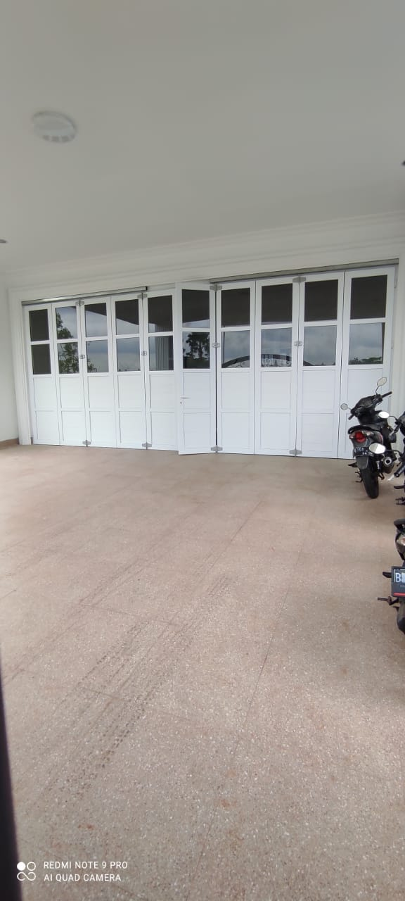

Bukaan dapat terasa lebih lebar
Daun yang dilipat ke sisi dapat membuka area lintas yang luas sesuai susunan, dimensi, dan ruang penumpukan yang tersedia.
Pintu lipat UPVC atau folding door UPVC membuka dengan melipat daun ke sisi. Susunan ini dapat memberi bukaan lebar jika ruang lipatan direncanakan. Panel yang terkumpul memerlukan ruang di samping, sementara ambang, jalur gerak, dan jumlah daun perlu disesuaikan dengan lokasi. Untuk pintu lipat garasi UPVC, tinjau lantai, akses kendaraan, hujan, serta kebutuhan privasi dan keamanan.

Daun pintu bergerak berurutan lalu terlipat ke sisi sesuai konfigurasi. Panel yang menumpuk mengambil ruang di tepi bukaan, sehingga lebar bersih akses tidak selalu sama dengan lebar bidang. Minta ukuran dan susunan panel setelah survei.
Berbeda dari swing yang memerlukan ruang ayun dan sliding yang menumpuk panel di jalur, folding dapat memberi bukaan lebar namun tetap memerlukan ruang lipatan dan lintasan bebas.
Pastikan manfaat bukaan lebar seimbang dengan ruang operasi yang tersedia.
Daun yang dilipat ke sisi dapat membuka area lintas yang luas sesuai susunan, dimensi, dan ruang penumpukan yang tersedia.
Dapat dipertimbangkan pada akses teras, ruang usaha, atau garasi setelah kebutuhan lalu lintas dan kondisi bukaan ditinjau.
Engsel, sambungan antardaun, dan lintasan harus bergerak tanpa terhalang benda, kendaraan, atau perubahan kondisi lantai.
Pintu lipat dapat dipertimbangkan untuk teras, ruang usaha, atau garasi jika ruang lipatan tersedia. Untuk pintu lipat garasi UPVC, periksa ruang kendaraan, ambang, aliran air, drainase, paparan cuaca, dan arah akses. Dimensi serta susunan daun ditentukan setelah survei.
Pastikan panel tidak mengenai dinding, rak, kendaraan, atau orang saat bergerak; jalur harus bebas hambatan. Periksa kondisi lantai dan sambungan. Pintu ini tidak otomatis menjamin kedap cuaca, sehingga perlindungan hujan perlu dibahas berdasarkan lokasi.
Evan UPVC berbasis di Bekasi dan melayani permintaan di Indonesia. Survei dan pemasangan bergantung pada lokasi serta lingkup kerja; sampaikan alamat proyek saat konsultasi.
Informasi umum berikut bukan ukuran atau janji opsi tertentu.
| Aspek | Informasi |
|---|---|
| Mekanisme | Daun terlipat ke sisi sesuai konfigurasi. |
| Ukuran dan panel | Dimensi, jumlah daun, dan bukaan bersih ditetapkan setelah pengukuran. |
| Warna / finishing | Opsi aktual dikonfirmasi sebelum persetujuan. |
| Kaca dan panel | Isi daun mengikuti rancangan dan penggunaan. |
| Perangkat | Engsel, jalur, pegangan, dan pengunci mengikuti konfigurasi. |
Konfirmasikan ukuran, bukaan bersih, material panel, perangkat, harga, cakupan kerja, jadwal, dan ketentuan secara tertulis. Bahas kebutuhan privasi, keamanan, serta cuaca tanpa mengasumsikan performa.
Gunakan pegangan dan gerakkan pintu perlahan. Pastikan lintasan kosong dari kendaraan atau barang; jangan memaksa panel yang tersendat. Awasi anak-anak karena terdapat titik jepit pada sambungan daun.
Bersihkan jalur serta engsel dari debu dan lap profil dengan kain lembut. Jangan mengubah setelan sendiri; minta pemeriksaan jika gerak tidak rata atau pengunci sulit digunakan.
Folding melipat daun ke sisi, sliding menggeser panel, sedangkan swing berayun. Bandingkan lebar akses, ruang bebas, ambang, dan frekuensi penggunaan.
Contoh visual tidak menentukan susunan atau ukuran pada pesanan.

Pastikan ruang lipatan dan akses menjadi bagian pembahasan awal.
Jelaskan fungsi pintu, lalu lintas orang atau kendaraan, perkiraan bukaan, dan kirim foto lokasi bila tersedia.
Ukur bukaan dan cek kondisi lantai, ambang, drainase, ruang tumpukan panel, serta area untuk pemasangan.
Tinjau susunan daun, bukaan bersih, isi panel, perangkat, cakupan kerja, harga, jadwal, dan ketentuan tertulis.
Setelah persetujuan, pekerjaan berjalan sesuai rincian yang disepakati. Pelajari cara operasi dan perawatan bersama tim.
Daun-daun pintu bergerak dan terlipat ke satu atau kedua sisi sesuai rancangan. Saat terbuka, panel yang terlipat menempati ruang di samping bukaan, sehingga area penumpukan dan jalur geraknya harus bebas dari penghalang.
Pintu lipat dapat memungkinkan bukaan lebar, tetapi lebar bebas yang tercapai bergantung pada jumlah daun, konfigurasi, dan ruang yang ditempati panel saat terlipat. Minta ukuran bukaan bersih dan gambar susunan daun setelah survei; jangan menyimpulkannya dari foto.
Periksa dimensi, arah lipatan, area parkir, lantai dan ambang, drainase, paparan cuaca, serta akses kendaraan. Kebutuhan privasi, keamanan, dan ketahanan terhadap kondisi lokasi juga perlu dibahas dan dicantumkan dalam spesifikasi; jangan menganggap performa tertentu tersedia tanpa konfirmasi.
Pilihan warna, finishing, kaca, pegangan, pengunci, dan perangkat bergantung pada konfigurasi serta ketersediaan aktual. Minta daftar pilihan dan rincian tertulis untuk produk yang ditawarkan sebelum persetujuan. Tidak ada spesifikasi yang disimpulkan dari gambar.
Jaga jalur gerak dan area engsel bersih dari debu atau benda yang menghambat. Operasikan perlahan melalui pegangan dan jangan memaksa panel yang tersendat. Bersihkan profil dengan kain lembut, lalu minta pemeriksaan bila gerak, sambungan, atau pengunci berubah.
Mulai dengan konsultasi fungsi bukaan dan foto lokasi, lanjutkan survei serta pengukuran. Konfirmasikan ruang lipatan, konfigurasi daun, kaca, perangkat, cakupan pekerjaan, dan penawaran tertulis. Produksi serta pemasangan dilaksanakan setelah rincian dan jadwal disepakati.
Bandingkan kebutuhan bukaan pintu sebelum menentukan model.
Diskusikan fungsi bukaan dan ruang lipatan bersama Evan UPVC.